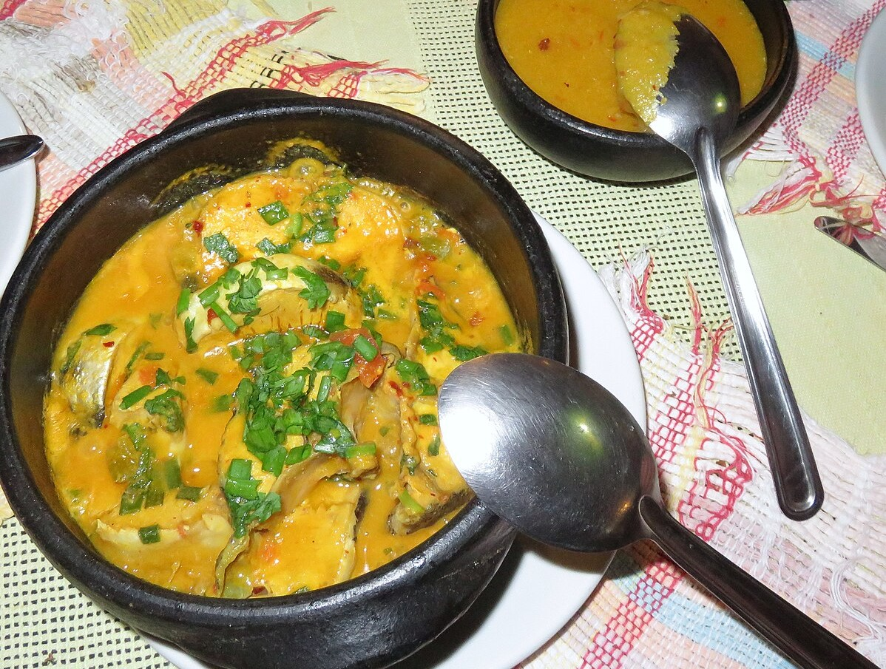

Peixada

Description
Uma "peixada" pode referir-se a um prato culinário de peixe cozido em um molho com legumes e temperos, como a Peixada Cearense, que inclui ovos e pirão, ou a um termo informal para apadrinhamento ou favoritismo, onde alguém obtém algo devido a contatos influentes em vez de mérito próprio.
Ingredients
- 1 kg de peixe cortado em postas
- 1 cebola fatiada em rodelas
- 1 caixinha de molho de tomate pronto
- 3 colheres de sopa de azeite de dendê
- Azeitonas sem caroço
- Cebolinha picada
- Sal a gosto
- 2 tomates grandes fatiados
- 1 pimentão cortado em tiras finas
- 500 ml de leite de coco
- 2 dentes de alhos picadinhos
- Salsa picada
- Pimenta
Steps
- Em uma travessa coloque as postas de peixe e tempere com o sal e pimenta, reserve.
- Em uma panela com fogo baixo, coloque o azeite de dênde, o alho e a cebola e doure-os.
- Em segida acresente o pimentão e as postas de peixe e com cuidado doure os 2 lados das postas.
- Em seguida acresente os tomates, as azeitonas, o molho de tomate e o leite de coco, se preferir adicione um pouco de sal.
- Tampe a panela e deixe cozinhando por 20 minutos em fogo baixo.
- Desligue o fogo e acrescente a salsa e a cebolinha picadas.
- Sirva com arroz branco.
Home